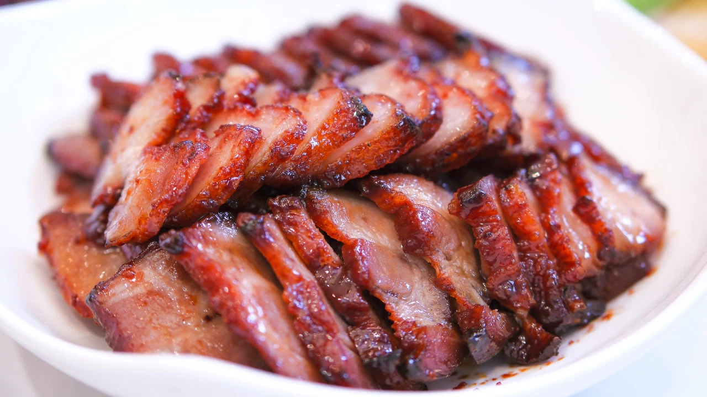

Char Siu
Home

Description
Char siu (叉烧) is a type of Cantonese roast meat. Char siu (or slightly different spelling, cha siu) is its Cantonese name, but in Mandarin, it is known as cha shao. To make char siu, pork is marinated in a sweet BBQ sauce and then roasted.
Ingredients
- 3 pounds boneless pork shoulder/butt
- 1/4 cup granulated white sugar
- 2 teaspoons salt
- 1/2 teaspoon five spice powder
- 1/4 teaspoon white pepper
- 1/2 teaspoon sesame oil
- 1 tablespoon Shaoxing rice wine
- 1 tablespoon soy sauce
- 1 tablespoon hoisin sauce
- 2 teaspoons molasses
- 3 cloves finely minced garlic
- 2 tablespoons maltose or honey
- 1 tablespoon hot water
Steps
- Cut the pork into long strips or chunks about 2 to 3 inches thick. Don’t trim any excess fat, as it will render off and add flavor.
- Combine the sugar, salt, five spice powder, white pepper, sesame oil, wine, soy sauce, hoisin sauce, molasses, food coloring (if using), and garlic in a bowl to make the marinade (i.e. the BBQ sauce).
- Reserve about 2 tablespoons of marinade and set it aside. Rub the pork with the rest of the marinade in a large bowl or baking dish. Cover and refrigerate overnight, or at least 8 hours. Cover and store the reserved marinade in the fridge as well.
- Preheat your oven to 'bake' at 475 F (246 C) with a rack positioned in the upper third of the oven. (If you only have a convection oven, keep in mind the oven not only heats more quickly, your char siu will roast faster than what we have described here).
- Line a sheet pan with foil and place a metal rack on top. Using the metal rack keeps the pork off of the pan and allows it to roast more evenly, like it does in commercial ovens described above. Place the pork on the rack, leaving as much space as possible between pieces. Pour 1 ½ cups water into the pan below the rack. This prevents any drippings from burning or smoking.
- Transfer the pork to your preheated oven. Roast for 25 minutes, keeping the oven setting at 475 F for the first 10 minutes of roasting, and then reduce your oven temperature to 375 F (190 C). After 25 minutes, flip the pork. If the bottom of the pan is dry, add another cup of water. Turn the pan 180 degrees to ensure even roasting. Roast another 15 minutes. Throughout the roasting time, check your char siu often (every 10 minutes) and reduce the oven temperature if it looks like it is burning!
- Meanwhile, combine the reserved marinade with the maltose or honey (maltose is very viscous you can heat it up in the microwave to make it easier to work with) and 1 tablespoon hot water. This will be the sauce you’ll use for basting the pork.
- After 40 minutes of total roasting time, baste the pork, flip it, and baste the other side as well. Roast for a final 10 minutes.
- By now, the pork has cooked for 50 minutes total. It should be cooked through and caramelized on top. If it’s not caramelized to your liking, you can turn the broiler on for a couple minutes to crisp the outside and add some color/flavor. Be sure not to walk away during this process, since the sweet char siu BBQ sauce can burn if left unattended.
- Remove from the oven and baste with the last bit of reserved BBQ sauce. Let the meat rest for 10 minutes before slicing, and enjoy!